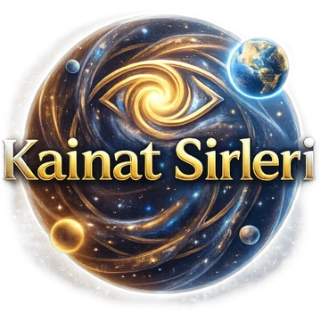

Kainatın Sirləri
Elm • Kosmos • Kvant fizikası • Fəlsəfə • Şüur — Azərbaycan dilində
Haqqımızda
Kainatın Sirləri elm, kosmos, kvant fizikası, fəlsəfə və insan şüuru haqqında Azərbaycan dilində video layihəsidir. Kainatın böyük suallarını — qara dəliklərdən zamanın təbiətinə, kvant dünyasının paradokslarından şüurun sirrinə qədər — sadə və maraqlı dillə izah edirik.
Elmi faktları nəzəriyyə və fərziyyələrdən ayırmağa çalışırıq; mənbələri videoların təsvirində göstəririk.
«Kainatın Sirləri» müstəqil yaradıcı layihədir və eyniadlı televiziya sənədli film seriyaları ilə əlaqəli deyil.
Rəsmi hesablar
Yalnız bu üç hesab rəsmidir.
Videolar
Mövzular
- Kosmos və astronomiya — ulduzlar, planetlər, qara dəliklər, kainatın yaranması
- Kvant dünyası — hissəciklər, dolaşıqlıq, müşahidəçi effekti
- Reallıq və şüur — zaman nədir, reallıq nədir, biz kimik?
- Böyük alimlər — Eynşteyn, Tesla, Nyuton, Hokinq və başqaları
- Kitabdan Kainata — düşündürücü kitabların izahı
Əlaqə
Əməkdaşlıq, müsahibə və media sorğuları üçün: kainatsirleri33@gmail.com